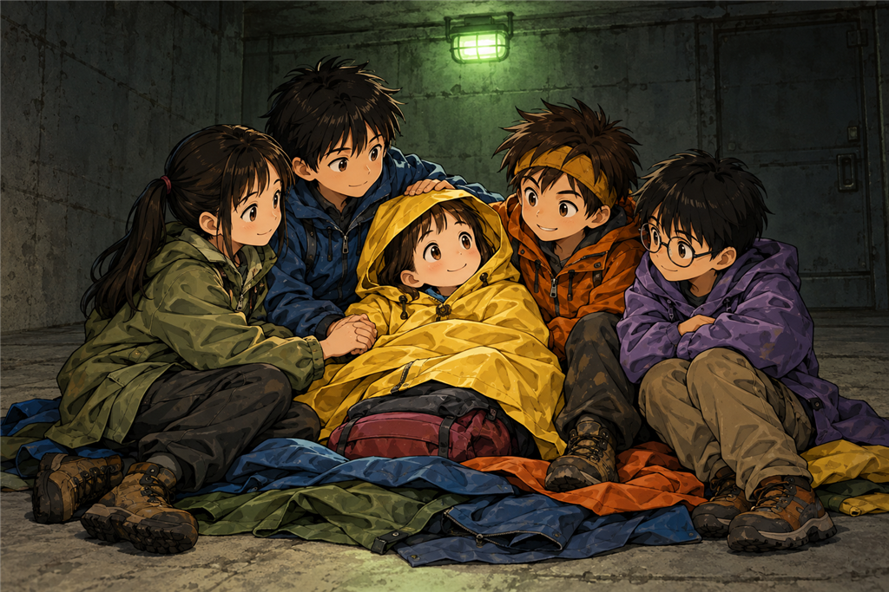
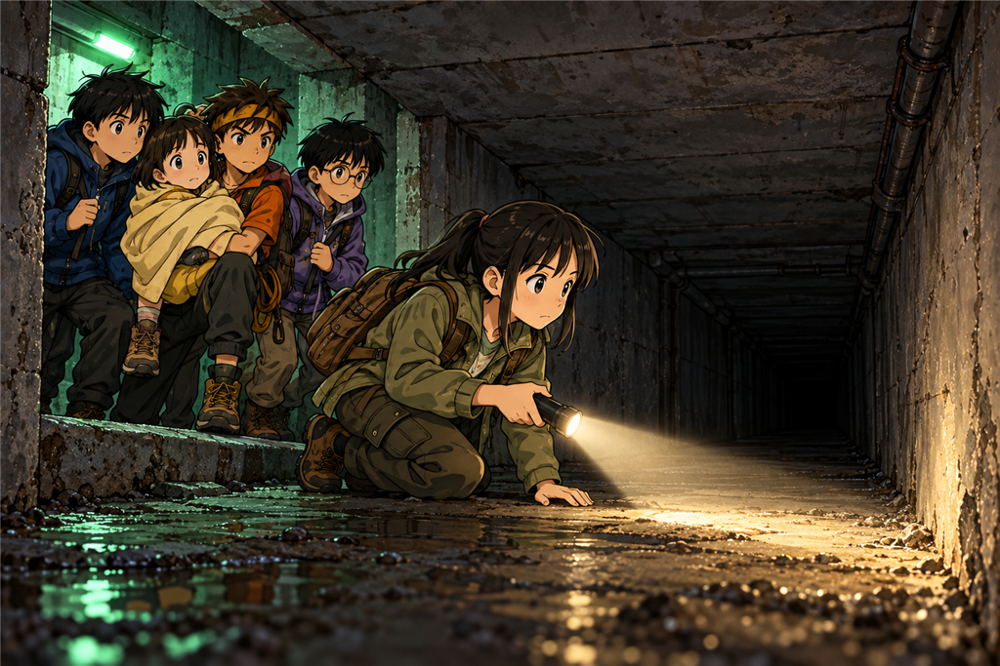
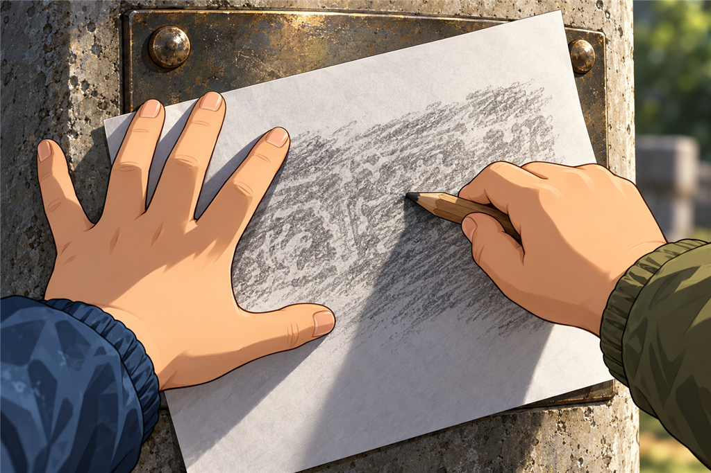

คืนนี้หนาวกว่าที่คิด
เวลาอ่านประมาณ 12 นาที · Heat Loss / First Aid
คืนที่สามเริ่มด้วยความเงียบที่ไม่มีใครสังเกต
พวกเขาทำตามกฎข้อสี่ที่นนท์ตั้งไว้ตอนบ่าย คือกลับมานอนในห้องโถงเท่านั้น ปูเสื้อกันฝนรองพื้นใกล้โคนบันไดเหมือนคืนก่อน วางกระเป๋าไว้ด้านรับลม แล้วแบ่งกะเฝ้าคนละชั่วโมง
ต้นกล้ากำลังเล่าว่าถ้าได้กลับบ้านเขาจะกินอะไรก่อน ปั้นเถียงว่าข้าวผัดกับผัดกะเพราเป็นของคนละอย่างกัน มีนาหัวเราะ
แล้วมีนาก็หยุดหัวเราะกลางคัน
เธอหันไปมองฟ้าที่นั่งอยู่ริมสุด
“ฟ้า”
ฟ้าเงยหน้าขึ้นช้ากว่าปกติ “คะ”
“หนูไม่ถามอะไรเลยตั้งแต่เย็น”
ฟ้ามองเธออยู่สองวินาที แล้วก็หันกลับไปมองพื้น
มีนาคลานเข้าไปหาเธอทันที
สามวันที่ผ่านมาฟ้าถามทุกอย่าง ถามว่ากลิ่นดินมีชื่อไหม ถามว่าเชื้อโรคตัวเล็กแค่ไหน ถามว่าพื้นดินมีหัวใจหรือเปล่า เธอถามจนพี่ ๆ ตอบไม่ทัน
คืนนี้เธอไม่ถามอะไรเลยสักคำ
1
มีนาจับมือฟ้า แล้วรีบปล่อย
“นนท์ มานี่เร็ว”
มือฟ้าเย็นกว่าพื้นคอนกรีต ริมฝีปากเธอซีดจนเกือบไม่มีสี และเสื้อผ้าเธอยังชื้นอยู่ทั้งตัว ชื้นมาตั้งแต่เมื่อไรไม่มีใครรู้
“หนาวไหม” นนท์ถาม
“ไม่หนาวแล้วค่ะ” ฟ้าตอบ “เมื่อกี้หนาว แต่เดี๋ยวนี้ไม่หนาวแล้ว ง่วงมากกว่า”
นนท์กับมีนามองหน้ากัน
คนที่ไม่อยู่ในสถานการณ์นี้จะคิดว่านั่นเป็นข่าวดี
มีนารู้ว่าไม่ใช่
“ตัวหนูสั่นอยู่เมื่อสักครู่หรือเปล่า” เธอถาม
“สั่นค่ะ แต่หยุดแล้ว”
“หยุดตอนไหน”
ฟ้าคิดอยู่นาน นานกว่าที่คำถามง่าย ๆ ควรใช้
“…ไม่รู้ค่ะ”
ต้นกล้ายื่นหน้าเข้ามา “แล้วดีขึ้นแล้วใช่ไหม ที่ไม่สั่นแล้วเนี่ย”
“ไม่” มีนาตอบสั้นที่สุดเท่าที่เธอเคยตอบอะไรมา
เธอหันไปหานนท์
“การสั่นคือร่างกายกำลังสร้างความร้อนให้ตัวเอง” เธอพูด “ถ้ามันหยุดสั่นทั้งที่ยังไม่อุ่น แปลว่ามันเริ่มสร้างไม่ทันแล้ว”
ห้องเงียบลงทันที
ปั้นปิดสมุดแล้วลุกขึ้นนั่งตัวตรง “เราทำอะไรได้บ้าง”
2
นนท์นั่งลงแล้วไล่ของในหัวตัวเองออกมาทีละอย่าง
ไฟ จุดไม่ได้ ห้องนี้ปิด ไฟกินอากาศแล้วปล่อยของเสียออกมา พวกเขาเรียนบทนั้นมาแล้วเมื่อคืนก่อน
น้ำร้อน ไม่มี เพราะไม่มีไฟ
ผ้าห่ม ไม่มี มีแต่เสื้อกันฝนที่ใช้ปูพื้นอยู่
พาเธอขึ้นข้างบน ยิ่งแย่ กลางคืนในป่าเย็นกว่าในนี้
“เราไม่มีอะไรจะให้ความร้อนเธอเลย” เขาพูดออกมาเสียงเบา
“มี” มีนาตอบ
เขาเงยหน้าขึ้น
“เราสี่คน” เธอพูด “ตัวเราอุ่นอยู่แล้วทั้งสี่คน”
🧠 หยุดคิดสักครู่
ฟ้าตัวเย็น เสื้อผ้าชื้น หยุดสั่นแล้ว และบอกว่าง่วงมาก ทีมไม่มีไฟ ไม่มีน้ำร้อน และไม่มีผ้าห่ม
ถ้าเป็นเรา จะทำยังไง?
A. ให้หนูนอนหลับไปเลย เพราะหนูบอกเองว่าไม่หนาวแล้วและง่วงมาก
B. ถูตัวหนูแรง ๆ ให้ร้อนเร็วที่สุด แล้วหาอะไรจุดไฟให้ใกล้ตัวที่สุด
C. เปลี่ยนของเปียกออก กันไม่ให้ตัวแตะพื้นเย็น ห่อตัวให้คลุมถึงหัว ให้ของกินกับน้ำ แล้วทุกคนนั่งชิดกัน
เลือกไว้ในใจก่อน แล้วค่อยอ่านต่อนะ
3
“A ไม่ได้” มีนาพูดก่อนใครจะเถียง “ที่หนูบอกว่าไม่หนาวแล้ว ไม่ได้แปลว่าหายหนาว มันแปลว่าตัวหนูเริ่มแพ้แล้ว”
“B ก็ไม่ได้” นนท์ต่อ “ไฟในห้องปิดคือสิ่งที่เกือบทำให้เราทุกคนไม่ตื่นขึ้นมาเมื่อคืนก่อน”
“แล้วถูตัวแรง ๆ ล่ะ” ต้นกล้าถาม “มันก็ร้อนขึ้นจริงนี่”
“ร้อนขึ้นเฉพาะที่ผิว” มีนาตอบ “แต่ตัวข้างในยังเย็น แล้วถ้าทำแรงเกินไปกับคนที่เย็นขนาดนี้ มันไม่ดีกับหัวใจเขา”
“C” ปั้นพูดสั้น ๆ
พวกเขาเริ่มทำทันทีโดยไม่เสียเวลาเถียงต่อ
มีนาเป็นคนจัดการเรื่องเสื้อ เธอให้ฟ้าเปลี่ยนเป็นเสื้อแห้งที่สุดที่หาได้ ซึ่งคือเสื้อตัวในของมีนาเองที่เก็บอยู่ก้นกระเป๋ามาสามวัน ส่วนเสื้อเปียกของฟ้าถูกเอาออกไปวางให้ห่างตัว
“ของเปียกติดตัวไว้มันไม่ได้แค่เย็น” เธออธิบายให้ต้นกล้าที่คอยส่งของ “น้ำมันดึงความร้อนออกจากตัวเราเร็วกว่าอากาศหลายเท่า”
ต้นกล้าพับเสื้อกันฝนให้หนาขึ้นเป็นสองชั้นรองก้นฟ้า แล้วเอากระเป๋าเปล่ามาวางเสริมใต้ขา
“พื้นคอนกรีตเย็นกว่าอากาศ” นนท์บอก “ตราบใดที่ตัวเธอแตะพื้นอยู่ ความร้อนจะไหลลงพื้นเรื่อย ๆ”
ปั้นถอดเสื้อคลุมตัวเองออกมาคลุมฟ้าแล้วดึงขึ้นมาคลุมถึงหัว เหลือแต่หน้าโผล่ออกมา
“ทำไมต้องคลุมหัวด้วยคะ” ฟ้าถามเสียงเบามาก
ทั้งสี่คนหันมามองเธอพร้อมกัน
เพราะนั่นเป็นคำถามแรกของเธอในคืนนี้
“เพราะหัวเราปล่อยความร้อนออกเยอะ” ปั้นตอบ “แล้วหนูก็ถามอีกแล้ว ดีมาก ถามต่อไปเรื่อย ๆ นะ”

ไม่มีไฟ ไม่มีผ้าห่ม เหลือสิ่งเดียวที่ยังอุ่นอยู่คือตัวพวกเขาเอง
4
แล้วต้นกล้าก็ลุกขึ้นไปที่กระเป๋าอุปกรณ์
เขาคุ้ยลงไปถึงก้นกระเป๋า แล้วหยิบอะไรบางอย่างออกมา
ขนมซองสุดท้าย ซองที่เขาแยกไว้เป็นกองของตัวเองตั้งแต่เช้าวันที่สอง ซองที่เขาเรียกว่าของสำคัญมากแล้วมีนาแก้ว่ามันคือของกิน
เขาฉีกซองแล้วยื่นให้ฟ้า
“กินเลย ทั้งซอง”
ฟ้ามองซองนั้น แล้วมองเขา “แต่พี่เก็บไว้ตั้งนาน”
“ก็เก็บไว้เผื่อวันที่จำเป็นไง” เขาตอบ “วันนี้แหละ”
มีนาช่วยให้ฟ้ากินทีละน้อย สลับกับจิบน้ำต้มที่เหลือ
“ของกินช่วยได้ด้วยเหรอ” ต้นกล้าถาม
“ร่างกายสร้างความร้อนจากอาหาร” นนท์ตอบ “สามวันมานี้เรากินกันน้อยมาก ฟ้าตัวเล็กที่สุด ของที่เก็บไว้ในตัวก็น้อยที่สุด”
“แล้วทำไมคนตัวเล็กหนาวง่ายกว่าคะ” ฟ้าถาม เสียงยังเบาแต่ชัดขึ้นกว่าเมื่อครู่
ปั้นเป็นคนตอบ “เพราะตัวเล็กมีผิวมากเมื่อเทียบกับเนื้อตัวทั้งหมด ความร้อนมันหนีออกทางผิว ตัวเล็กก็เลยเสียความร้อนเร็วกว่าคนตัวใหญ่”
“เหมือนน้ำในแก้วเล็กกับน้ำในหม้อใหญ่” มีนาเสริม “แก้วเล็กเย็นก่อนเสมอ”
ผ่านไปอีกราวครึ่งชั่วโมง ตัวฟ้าเริ่มสั่นขึ้นมาอีกครั้ง
ต้นกล้าตกใจ “เฮ้ย สั่นอีกแล้ว แย่ลงหรือเปล่า”
“ดีขึ้น” มีนาตอบ แล้วเสียงเธอสั่นนิดหนึ่งด้วยความโล่งใจ “ตัวหนูเริ่มสู้ได้แล้ว”
5
นนท์นั่งมองทุกคนอยู่ครู่หนึ่ง แล้วพูดขึ้น
“เราจะย้ายที่นอน”
ปั้นเงยหน้าทันที “กฎข้อสี่ของนายเองนะ ให้นอนในห้องโถงเท่านั้น”
“ใช่ เราตั้งเอง”
“แล้วจะเลิกเองเหรอ”
“เราตั้งกฎนั้นไว้เพื่อให้ทุกคนปลอดภัย” นนท์ตอบ “แต่ตอนนี้กฎนั้นกำลังทำให้ฟ้าแย่ลง กฎที่ทำร้ายคนที่มันควรปกป้อง ต้องแก้”
เขาชี้ไปที่ประตูบานกลาง
“ทางเดินหลังบานนั้นอุ่นกว่าห้องนี้ เรารู้มาตั้งแต่วันแรกที่ลงมา ตอนเปิดมันลมที่ออกมาก็อุ่นและแห้ง”
มีนาพยักหน้า “อุ่นกว่าไม่กี่องศาก็ช่วยได้มากแล้วทั้งคืน”
แต่นนท์ไม่ได้ย้ายทันที
เขาตั้งเงื่อนไขก่อนสามข้อ หนึ่ง ทุกคนไปพร้อมกันห้าคน ไม่มีใครอยู่ข้างหลัง สอง ตรวจพื้นทางเดินด้วยไฟกราดก่อนเข้าไป ว่ามีรอยเท้าใหม่เพิ่มมาหรือเปล่า สาม นอนในช่วงต้นของทางเดินเท่านั้น ให้มองเห็นบันไดได้จากที่นอน และไม่วางของขวางทางขึ้น
มีนาคุกเข่าส่องไฟกราดไปตามพื้นทางเดินอย่างช้า ๆ
“ไม่มีรอยใหม่” เธอรายงาน “มีแต่รอยของเราเมื่อเช้า”

ย้ายที่นอนได้ แต่ต้องตรวจพื้นก่อนทุกครั้ง
พวกเขาจึงย้ายกันไปตรงนั้น ปูเสื้อกันฝนซ้อนสามชั้น แล้วนั่งล้อมฟ้าไว้ตรงกลางโดยให้คนที่ตัวใหญ่ที่สุดอยู่ด้านที่ลมผ่าน
ภายในครึ่งชั่วโมง มือฟ้าก็อุ่นขึ้นจนมีนายอมปล่อยมือ
“หนูง่วงแล้วค่ะ” ฟ้าพูด
“คราวนี้นอนได้” มีนาตอบ “พี่อยู่ตรงนี้ทั้งคืน”
6
ปั้นเป็นคนเฝ้ากะแรก
เขาไม่ได้นอนอยู่ดี เพราะหัวเขาหมุนอยู่กับคำถามหนึ่งที่ค้างมาตั้งแต่เช้า
เขาลุกไปที่โต๊ะเหล็กในห้องแผนที่ ซึ่งอยู่ปลายทางเดินเดียวกันแค่สิบกว่าก้าว นนท์ตื่นขึ้นมาตามไปด้วยทันทีโดยไม่ต้องให้ใครเรียก เพราะกฎข้อหนึ่งคือไม่มีใครไปไหนคนเดียว
“หาอะไร” นนท์ถาม
“ลิ้นชัก” ปั้นตอบ “โต๊ะทำงานมันต้องมีลิ้นชัก”
มันมีจริง ๆ อยู่ใต้ขอบโต๊ะด้านขวา ฝืดจนต้องออกแรงดึงสองครั้ง
ข้างในมีคลิปหนีบกระดาษขึ้นสนิมเป็นก้อน มีไม้บรรทัดเหล็ก มียางลบที่แข็งเป็นหินไปแล้ว
และมีดินสอไม้สองแท่ง
ปั้นหยิบมันขึ้นมาแล้วมองนนท์
ไม่มีใครต้องพูดว่าจะเอาไปทำอะไร เพราะทั้งคู่คิดถึงเรื่องเดียวกันตั้งแต่วินาทีที่เห็นมัน
พวกเขาเดินไปที่เสาข้างแผงแผนที่ ตรงที่แผ่นป้ายโลหะติดอยู่ ป้ายที่มีเลข 07 อยู่มุมซ้าย และมีช่องว่างเรียงกันห้าช่อง ช่องที่ฟ้าเป็นคนแรกที่บอกว่ามันไม่เรียบ มันเป็นรอย ๆ
นนท์ฉีกกระดาษเปล่าจากท้ายสมุดของปั้นออกมาแผ่นหนึ่ง แล้วทาบลงบนช่องแรก
ปั้นเอาดินสอตะแคงข้าง แล้วถูเบา ๆ ไปทั่วแผ่น
ไส้ดินสอติดกระดาษตรงส่วนที่โลหะนูน แต่ไม่ติดตรงส่วนที่เป็นร่อง
และสิ่งที่โผล่ขึ้นมาบนกระดาษคือรอยจาง ๆ ของตัวอักษรที่เคยถูกปั๊มลงไปในเนื้อโลหะ ก่อนที่ใครจะเอาอะไรมาขูดผิวมันออก
ปั้นถูต่ออีกสองรอบ ช้า ๆ
แล้วเขาก็หยุดมือ
บนกระดาษมีตัวอักษรไทยสี่ตัวเรียงกันอยู่ อ่านได้ชัดเจน
ธ า ร า
นนท์จ้องมันอยู่นาน
“เป็นชื่อ” เขาพูด
“เป็นชื่อ” ปั้นตอบ
สามวันมานี้พวกเขาเรียกคนคนนั้นว่าคนที่ลากกล่อง คนที่เดินตอนตีสองสี่สิบเอ็ด คนที่ตัวใหญ่กว่าเราทุกคน คนที่หก
ตอนนี้เขามีชื่อ
ปั้นค่อย ๆ พับกระดาษแผ่นนั้นเก็บใส่สมุด ด้วยความระวังเหมือนกำลังเก็บอะไรที่แตกได้
“ยังมีอีกสี่ช่อง” นนท์พูด
“คืนนี้พอแค่นี้ก่อน” ปั้นตอบ แล้วเหลือบไปทางทางเดินที่ฟ้าหลับอยู่ “เราต้องกลับไปเฝ้า”
ก่อนเดินกลับ นนท์หันไปมองแผ่นป้ายนั้นอีกครั้ง
คนที่ขูดชื่อออกจากป้ายนี้ ต้องใช้เวลาอยู่พักหนึ่ง ต้องตั้งใจ ต้องขูดทีละช่องจนครบทั้งห้าช่อง
แล้วเขาก็ไม่ได้ขูดเพราะอยากลืม
คนที่อยากลืมจะไม่กลับมาที่นี่อีก

สิ่งที่ถูกขูดออกจากผิว ยังเหลืออยู่ในร่องข้างใต้
🔬 วิทยาศาสตร์ในตอนนี้
การสั่นคือร่างกายกำลังสร้างความร้อนให้ตัวเอง ถ้าคนที่ตัวเย็นหยุดสั่นทั้งที่ยังไม่อุ่นขึ้น พูดจาช้าลง สับสน หรือบอกว่าไม่หนาวแล้วและง่วงมาก นั่นไม่ใช่สัญญาณที่ดี แต่เป็นสัญญาณว่าต้องช่วยทันที
สิ่งที่ต้องทำคือหยุดการเสียความร้อนก่อน ไม่ใช่เร่งเพิ่มความร้อน เปลี่ยนของเปียกออก กันตัวไม่ให้แตะพื้นเย็น คลุมให้ถึงหัวเพราะหัวปล่อยความร้อนออกเยอะ ให้ของกินกับน้ำ และใช้ความอบอุ่นจากตัวคนอื่นที่ยังอุ่นอยู่
สิ่งที่ไม่ควรทำคือถูตัวแรง ๆ หรือเอาความร้อนจ่อใกล้ ๆ เพราะมันทำให้ผิวร้อนขึ้นแต่ตัวข้างในยังเย็น และไม่ควรจุดไฟในที่ปิดเพื่อให้อุ่นเด็ดขาด
คนตัวเล็กเสียความร้อนเร็วกว่าคนตัวใหญ่ เพราะมีพื้นผิวมากเมื่อเทียบกับขนาดตัว ความร้อนจึงหนีออกทางผิวได้เร็วกว่า เหมือนน้ำในแก้วเล็กที่เย็นก่อนน้ำในหม้อใหญ่เสมอ ในกลุ่มที่มีเด็กเล็กอยู่ด้วย ต้องเฝ้าคนเล็กที่สุดก่อน
รอยที่ถูกขูดออกจากผิวโลหะยังเหลือร่องข้างใต้ไว้ การทาบกระดาษแล้วใช้ดินสอตะแคงถูเบา ๆ จะทำให้ไส้ดินสอติดเฉพาะส่วนที่นูน และเว้นส่วนที่เป็นร่อง ทำให้อ่านสิ่งที่มองด้วยตาเปล่าไม่เห็นได้
จบตอนที่ 13
ช่วยให้ทีม ZERO เดินทางต่อ ☕
ถ้าตอนนี้ทำให้คุณสนุก สนับสนุนค่าเวลาเขียนและภาพประกอบได้ตามสะดวกครับ
สนับสนุนทีม ZERO